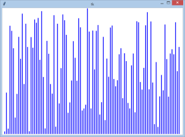
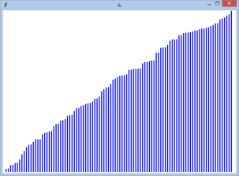
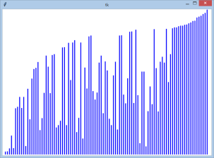
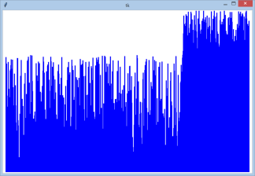
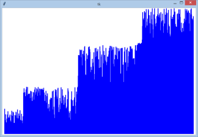
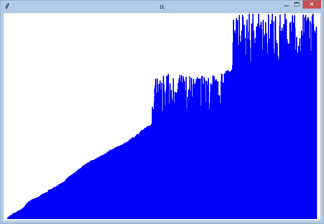
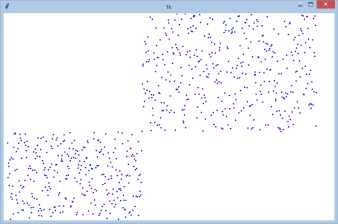
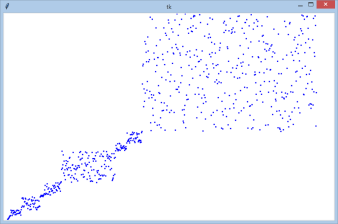
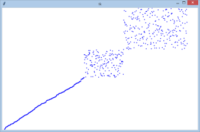
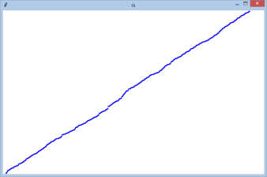

18. Triedenia I.¶
Triedením rozumieme taký algoritmus, ktorý usporiada vstupnú postupnosť prvkov (napríklad zoznam, n-ticu, spájaný zoznam, …) tak, aby ich poradie zodpovedalo nejakému usporiadaniu, napríklad vzostupne alebo zostupne. Prvky, ktoré takto usporadúvame, sa môžu skladať z viacerých zložiek (častí alebo atribútov), pričom len nejaká ich časť slúži na porovnávanie usporiadania - časti prvku, podľa ktorého usporadúvame, hovoríme kľúč.
Mnohé z týchto triediacich algoritmov sú in-place (triedenie na mieste), čo znamená, že výsledná usporiadaná postupnosť sa nachádza na tom istom mieste ako bola vstupná. Takýmto triedením je aj pythonovská metóda sort() pre typ zoznam (list), napríklad:
>>> zoznam = [7, 16, 3, 7, 9, 5, 10]
>>> zoznam.sort()
>>> zoznam
[3, 5, 7, 7, 9, 10, 16]
Iný typ triediacich algoritmov vstupnú postupnosť nemení, ale vytvorí novú usporiadanú postupnosť (najčastejšie ako zoznam, t.j. typ list), ktorá obsahuje tie isté prvky, ako boli na vstupe, ale v správnom poradí. Napríklad aj štandardná pythonovská funkcia sorted() pracuje na tomto princípe:
>>> ntica = (7, 16, 3, 7, 9, 5, 10)
>>> zoznam = sorted(ntica)
>>> zoznam
[3, 5, 7, 7, 9, 10, 16]
V ďalších častiach ukážeme niekoľko najznámejších jednoduchých triediacich algoritmov. Zameriame sa len na in-place triedenia, t.j. také, ktoré triedia n-prvkový zoznam (typu list) a výsledok usporiadania bude na pôvodnom mieste.
Bubble, min a insert sort¶
Predstavme si takýto problém:
Na stole máme v rade rozložených n kariet s nejakými číslami (napríklad od 1 do n). Karty sú zamiešané a otočené tak, že nevidíme ich čísla. Karty treba usporiadať podľa čísel od najmenšieho po najväčšie. Pre preusporiadavanie môžeme použiť jedinú operáciu:
vyberieme nejaké dve karty a otočíme ich číslom nahor (podobne ako v hre Pexeso)
porovnáme tieto dve hodnoty a rozhodneme sa, či ich navzájom vymeníme
opäť otočíme karty číslom nadol
Toto môžeme opakovať ľubovoľný počet krát, ale asi najvhodnejšie by bolo, keby sme to urobili čo na najmenší počet takýchto operácií.
Presne takto to „vidí“ aj triediaci algoritmus: máme k dispozícii nejaký zoznam čísel a my ich teraz pomocou vzájomného porovnávania a prípadných výmen musíme preusporiadať tak, aby boli na záver v rastúcom poradí.
Najjednoduchší algoritmus, ktorým dokážeme usporiadať prvky n-prvkového zoznamu bude postupovať takto:
postupne bude porovnávať dvojice prvkov susedných prvkov:
0<=>1,1<=>2,2<=>3, …n-3<=>n-2,n-2<=>n-1pre každú porovnávanú dvojicu, keď zistí že pravý prvok (druhý z dvojice) je menší ako ľavý (t.j.
i-ty je väčší akoi+1-ty), tieto dva prvky navzájom vymenítento proces ešte neusporiada celý zoznam, treba ho opakovať n-krát
Ukážme to na takomto príklade:
Máme zoznam s týmito číslami:
7, 9, 5, 8, 2
keďže karty sú otočené číslom nadol, vidíme len:
X X X X X
otočíme prvé dve karty a porovnáme ich:
7 9 X X X
keďže prvý prvok nie je väčší ako druhý, nerobíme nič, len otočíme karty späť a pokračujeme na ďalších dvoch kartách:
X 9 5 X X
druhá karta z dvojice je menšia ako prvá, preto ich vymeníme:
X 5 9 X X
otočíme a pokračujeme s ďalšou dvojicou:
X X 9 8 X
opäť ich vymeníme:
X X 8 9 X
a pokračujeme na ďalšej dvojici:
X X X 9 2
aj tieto dve musíme navzájom vymeniť
Týmto končí prvý prechod algoritmu a keby sme sa teraz pozreli na momentálny obsah zoznamu, videli by sme
7, 5, 8, 2, 9
Tento proces bude treba ešte niekoľkokrát zopakovať.
postupne:
X X X X X 7 5 X X X 5 7 X X X <-- výmena X 7 8 X X X X 8 2 X X X 2 8 X <-- výmena X X X 8 9
Teraz zoznam obsahuje postupne:
5, 7, 2, 8, 9
Ďalší prechod algoritmu
postupne:
X X X X X 5 7 X X X X 7 2 X X X 2 7 X X <-- výmena X X 7 8 X X X X 8 9
V zozname teraz máme:
5 2 7 8 9
Ešte jeden prechod
postupne:
X X X X X 5 2 X X X 2 5 X X X <-- výmena X 5 7 X X X X 7 8 X X X X 8 9
A konečne dostávame utriedený zoznam:
2, 5, 7, 8, 9
Pozrime, ako vyzerá zoznam na začiatku a potom aj na konci každého prechodu:
7, 9, 5, 8, 2
-------------
7, 5, 8, 2, 9 <-- 9 je na svojom mieste
5, 7, 2, 8, 9 <-- 8, 9 sú na svojom mieste
5, 2, 7, 8, 9 <-- 7, 8, 9 sú na svojom mieste
2, 5, 7, 8, 9 <-- 5, 7, 8, 9 sú na svojom mieste
Všimnite si, po každom prechode „precestuje“ ďalší najväčší prvok na svoje miesto: najprv 9, potom 8, potom 7, atď. Hovoríme, že každým prechodom sa nejaké prvky presúvajú na koniec (veľké bublinky) a nejaké (malé bublinky) sa presunú smerom k začiatku. Hovoríme tomu bublinkové triedenie, lebo malé bublinky klesajú na začiatok a veľké stúpajú na koniec (ako bublinky v pohári vody).
Bubble_sort¶
Bublinkové triedenie postupne prechádza celý zoznam a porovnáva všetky vedľa seba ležiace dvojice prvkov: ak je prvý z nich väčší ako druhý, treba ich navzájom vymeniť. Tento postup sa opakuje dovtedy, kým nezostane celý zoznam utriedený, teda maximálne n-krát.
Zapíšme tento algoritmus, ale najprv si pripravíme pomocnú funkciu vymen(), pomocou ktorej budeme vymieňať prvky zoznamu:
def vymen(zoz, i, j):
zoz[i], zoz[j] = zoz[j], zoz[i]
def bubble_sort(zoz):
for i in range(len(zoz)):
for j in range(len(zoz)-1):
if zoz[j] > zoz[j+1]:
vymen(zoz, j, j+1)
Všimnite si, že táto funkcia nevracia žiadnu hodnotu (teda vracia None) ani nič nevypisuje. Funkcia len modifikuje vstupný zoznam, ktorý dostala ako parameter.
Otestujme:
>>> zz = [7, 16, 3, 7, 9, 5, 10]
>>> bubble_sort(zz)
>>> zz
[3, 5, 7, 7, 9, 10, 16]
Skúsme si priebeh algoritmu vizualizovať tak, že vo vnútornom cykle ešte pred porovnaním vypíšeme obsah zoznamu a vyznačíme, ktoré dva prvky sa porovnávajú:
def bubble_sort(zoz):
for i in range(len(zoz)):
for j in range(len(zoz)-1):
print(*zoz[:j], (zoz[j], zoz[j+1]), *zoz[j+2:]) # pridali sme výpis
if zoz[j] > zoz[j+1]:
vymen(zoz, j, j+1)
Po spustení rovnakého testu dostaneme dosť dlhý výpis, ale jeho začiatok je takýto:
(7, 16) 3 7 9 5 10
7 (16, 3) 7 9 5 10
7 3 (16, 7) 9 5 10
7 3 7 (16, 9) 5 10
7 3 7 9 (16, 5) 10
7 3 7 9 5 (16, 10)
(7, 3) 7 9 5 10 16
3 (7, 7) 9 5 10 16
3 7 (7, 9) 5 10 16
3 7 7 (9, 5) 10 16
3 7 7 5 (9, 10) 16
3 7 7 5 9 (10, 16)
(3, 7) 7 5 9 10 16
...
Z tohto výpisu vidíme, že po prvom prechode algoritmu (po prvých šiestich riadkoch) sa maximálny prvok 16 dostáva na koniec zoznamu, teda na svoje cieľové miesto. Každý ďalší prechod porovnáva všetky susediace dvojice prvkov, teda bude zakaždým porovnávať aj predposledný s posledným - čo je zrejme zbytočné. Totiž po každom prechode sa dostáva na svoje miesto ďalší a ďalší prvok od konca, nielen posledný prvok po prvom prechode. Z tohto dôvodu sa zvykne vnútorný cyklus zakaždým skrátiť o jeden prvok od konca. Vhodnejším zápisom by bolo:
def bubble_sort(zoz):
for i in range(len(zoz)):
for j in range(len(zoz)-1-i): # skracujeme vnútorný cyklus zakaždým o 1
print(*zoz[:j], (zoz[j], zoz[j+1]), *zoz[j+2:]) # pridali sme výpis
if zoz[j] > zoz[j+1]:
vymen(zoz, j, j+1)
Na otestovanie bublinkového triedenia môžeme použiť, napríklad generátor náhodných čísel:
import random
zoz = [random.randrange(100) for i in range(5000)]
zoz1 = sorted(zoz) # kontrolne utriedený zoznam
bubble_sort(zoz) # bublinkové triedenie
print(zoz == zoz1)
Tento program najprv vygeneruje 5000-prvkový zoznam náhodných čísel od 0 do 99. Potom do zoz1 priradí jeho usporiadanú kópiu, ktorú sme vytvorili pomocou štandardnej funkcie sorted(). Ďalej usporiada náš zoznam pomocou algoritmu bubble_sort() (zrejme sme vyhodili kontrolný výpis) a na záver vypíše, či sú tieto dva zoznamy rovnaké. Zrejme, ak je naše bublinkové triedenie správne, program by mal vypísať True. Tento test môže bežať aj niekoľko sekúnd.
Ďalšie triedenie, tzv. min sort, funguje veľmi podobne, ako bublinkové triedenie.
Min sort¶
Triedenie s výberom minimálneho prvku (hovorí sa mu aj selection sort) pracuje na tomto princípe:
v prvom prechode algoritmu presťahuje minimálny prvok na prvú pozíciu v zozname
v každom ďalšom
i-tom prechode presťahujei-tu najmenšiu hodnotu nai-tu pozíciu - zrejme hľadá túto najmenšiu hodnotu odi-tej pozície zoznamu až do koncakeď toto zopakuje
n-krát, dostane usporiadaný celý zoznami-ty minimálny prvok bude hľadať a presťahovávať nasledovným postupom:porovná dvojice prvkov
i<=>1,i<=>2,i<=>3, …i<=>n-2,i<=>n-1pre každú porovnávanú dvojicu (porovnáva
zoz[i]azoz[j]), keď zistí žei-ty prvok je väčší ako ten druhý (t.j.i-ty je väčší akoj-ty), tieto dva prvky navzájom vymení
Zapíšme tento algoritmu:
def min_sort(zoz):
for i in range(len(zoz)-1):
for j in range(i+1, len(zoz)):
if zoz[i] > zoz[j]:
vymen(zoz, i, j)
Všimnite si, ako sa táto verzia veľmi podobá na bublinkové triedenie. Môžeme aj sem pridať kontrolný výpis podobne, ako sme to robili v bublinkovom triedení. Teraz výpis vložíme až za vnútorný cyklus, ktorý hľadá a presťahuje i-ty minimálny prvok na svoje miesto:
def vymen(zoz, i, j):
zoz[i], zoz[j] = zoz[j], zoz[i]
def min_sort(zoz):
for i in range(len(zoz)-1):
for j in range(i+1, len(zoz)):
if zoz[i] > zoz[j]:
vymen(zoz, i, j)
print(*zoz[:i], [zoz[i]], *zoz[i+1:])
zz = [7, 16, 3, 7, 9, 5, 10]
print(*zz)
print('-----------------')
min_sort(zz)
print('výsledok =', zz)
V kontrolnom výpise môžete vidieť prvok zoznamu, ktorý sa práve zaradil ako i-ty minimálny:
7 16 3 7 9 5 10
-----------------
[3] 16 7 7 9 5 10
3 [5] 16 7 9 7 10
3 5 [7] 16 9 7 10
3 5 7 [7] 16 9 10
3 5 7 7 [9] 16 10
3 5 7 7 9 [10] 16
výsledok = [3, 5, 7, 7, 9, 10, 16]
Každý ďalší riadok kontrolného výpisu ukazuje obsah zoznamu po jednom prechode vonkajšieho cyklu, t.j. po zaradení i-teho najmenšieho na správne miesto: v prvom riadku výpisu je zoznam ešte netriedený, v druhom je jeho obsah po zaradení prvého minima na svoje miesto (číslo 3), v ďalšom riadku je zaradené už aj druhé číslo 5, atď. V poslednom riadku výpisu je utriedený celý zoznam.
Rovnaký test s náhodným zoznamom, ako sme robili s bublinkovým triedením, môžeme spustiť aj pre min-sort (zrejme sme opäť vyhodili kontrolný výpis):
import random
zoz = [random.randrange(100) for i in range(5000)]
zoz1 = sorted(zoz)
min_sort(zoz)
print(zoz == zoz1)
Insert sort¶
Triedenie vkladaním pracuje na takomto princípe:
predpokladajme, že istá časť zoznamu od začiatku je už utriedená
počas triedenia sa najbližší ešte neutriedený prvok zaradí do utriedenej časti na svoje miesto a tým sa tento utriedený úsek predĺži o 1
Zapíšme algoritmus:
def insert_sort(zoz):
for i in range(1, len(zoz)):
j = i
while j > 0 and zoz[j-1] > zoz[j]:
vymen(zoz, j-1, j)
j -= 1
Ako to funguje:
v premennej
ije hranica medzi utriedenou a neutriedenou časťou zoznamupri štarte predpokladáme, že prvý prvok je už jednoprvková utriedená časť a preto začíname od indexu 1 (teda druhým prvkom zoznamu)
vo vnútornom while-cykle je v premennej
jindex zaraďovaného prvku do utriedenej časti (úsek zoznamuzoz[0:i])kým je predchádzajúci prvok pred
j-tym väčší ako zaraďovaný (zoz[j]), tento zaraďovaný ho predbehne (vymení ich navzájom) a zmenšíjo 1
Aby sme lepšie pochopili, ako to funguje, môžeme vložiť kontrolné výpisy a otestovať to:
def vymen(zoz, i, j):
zoz[i], zoz[j] = zoz[j], zoz[i]
def insert_sort(zoz):
print(zoz[0], '|', *zoz[1:])
for i in range(1, len(zoz)):
j = i
while j > 0 and zoz[j-1] > zoz[j]:
vymen(zoz, j-1, j)
j -= 1
print(*zoz[:i+1], '|', *zoz[i+1:])
zz = [7, 16, 3, 7, 9, 5, 10]
insert_sort(zz)
print('výsledok =', zz)
dostávame tento výpis:
7 | 16 3 7 9 5 10
7 16 | 3 7 9 5 10
3 7 16 | 7 9 5 10
3 7 7 16 | 9 5 10
3 7 7 9 16 | 5 10
3 5 7 7 9 16 | 10
3 5 7 7 9 10 16 |
výsledok = [3, 5, 7, 7, 9, 10, 16]
Znak '|' slúži na oddelenie utriedenej a ešte neutriedenej časti zoznamu.
Aj pre toto triedenie môžeme spustiť test s 5000-prvkovým náhodným zoznamom (zrejme sme opäť vyhodili kontrolné výpisy):
import random
zoz = [random.randrange(100) for i in range(5000)]
zoz1 = sorted(zoz)
insert_sort(zoz)
print(zoz == zoz1)
Vizualizácia triedenia¶
Rôznych algoritmov triedenia je dosť veľa, ale na základe kontrolných výpisov obsahu zoznamu sa zriedkavo dá zistiť, ako to funguje naozaj. Teraz ukážeme, ako využiť Python na vizualizáciu algoritmov, ktoré modifikujú nejaký zoznam. Zostavíme triedu, pomocou ktorej budeme môcť sledovať, čo sa deje s nejakým zoznamom:
class Vizualizuj:
def __init__(self, zoz):
self.zoz = zoz
def __getitem__(self, index):
return self.zoz[index]
def __len__(self):
return len(self.zoz)
def __setitem__(self, index, hodnota):
self.zoz[index] = hodnota
Táto nová trieda Vizualizuj bude sledovať všetky základné operácie so zoznamom:
ak máme nejaký zoznam, napríklad
zoz = [2, 3, 5]a zabalíme ho triedouz = Vizualizuj(zoz), potom operácie indexovaniaz[]automaticky zavolajú metódy__getitem__()a__setitem__()do metódy
__setitem__()môžeme pridať nejaký výpis, napríkladprint(f'zoz[{index}] = {hodnota}')teraz môžeme zavolať ľubovoľný algoritmus, ktorý manipuluje so zoznamom a my mu namiesto neho podstrčíme inštanciu triedy
Vizualizuj(hovoríme tomu wrap)
class Vizualizuj:
def __init__(self, zoz):
self.zoz = zoz
print('povodny zoznam =', zoz)
def __getitem__(self, index):
return self.zoz[index]
def __len__(self):
return len(self.zoz)
def __setitem__(self, index, hodnota):
self.zoz[index] = hodnota
print(f'zoz[{index}] = {hodnota}')
def vymen(zoz, i, j):
zoz[i], zoz[j] = zoz[j], zoz[i]
def min_sort(zoz):
for i in range(len(zoz)-1):
for j in range(i+1, len(zoz)):
if zoz[i] > zoz[j]:
vymen(zoz, i, j)
zz = [7, 16, 3, 9]
min_sort(Vizualizuj(zz))
print('výsledok =', zz)
Všimnite si, že algoritmus min_sort netriedi obyčajný zoznam, ale zoznam, ktorý je obalený (teda wrap) triedou Vizualizuj. Vďaka tomu, hoci neobsahuje žiadne kontrolné výpisy, dostávame informácie o všetkých priradeniach do prvkov zoznamu. Okrem toho, už pri inicializácii, vypisujeme pôvodný zoznam:
povodny zoznam = [7, 16, 3, 9]
zoz[0] = 3
zoz[2] = 7
zoz[1] = 7
zoz[2] = 16
zoz[2] = 9
zoz[3] = 16
výsledok = [3, 7, 9, 16]
Takto by sme vedeli otestovať ľubovoľný algoritmus, v ktorom modifikujeme prvky nejakého zoznamu, napríklad aj bubble_sort alebo insert_sort.
Vizualizácia v grafickom režime¶
Často sa používajú iné zobrazovania momentálneho obsahu zoznamu, napríklad grafické zobrazovanie, v ktorom sú rôzne veľké hodnoty zobrazené rôznou dĺžkou úsečiek. Napríklad, takto by sme mohli zobraziť nejaký 100-prvkový neutriedený zoznam:
{kind=link}

Tento 100-prvkový zoznam je v grafickej ploche zobrazený takto: každý prvok zodpovedá úsečke, ktorej dĺžka zodpovedá príslušnej hodnote v zozname. Uvedomte si, že keby sme takto zobrazili vzostupne usporiadaný zoznam, úsečky by mali tvoriť takúto rastúcu postupnosť:
{kind=link}

Počas práce algoritmu by sa pri každej výmene dvoch prvkov zoznamu mohli vymeniť aj nakreslené úsečky - zrejme namiesto fyzického vymieňania úsečiek im len zmeníme dĺžky podľa aktuálneho obsahu príslušných prvkov zoznamu.
Trieda Vizualizuj preto musí zabezpečiť:
pri inicializácii inštancie v metóde
__init__()sa okrem zapamätania samotného zoznamu v atribúteself.zozvykreslí celý zoznam do grafickej plochy ako postupnosť úsečiekzrejme najprv vytvorí grafickú plochu (
canvas)identifikačné čísla nakreslených čiar uloží do zoznamu
self.id, aby ich mohol neskôr meniť (v príkazecanvas.coords)
pri zmene hodnoty prvku zoznamu
zoz[index]metóda__setitem__()zrealizuje túto zmenu v zozname a tiež zmení dĺžku príslušnej úsečkyvyužije identifikačné číslo úsečky v zozname
self.id
pri zisťovaní hodnoty prvku zoznamu
zoz[index]metóda__getitem__()vráti príslušnú hodnotu zo svojho atribútupri zisťovaní dĺžky
len(zoz)metóda__len__()vráti aktuálnu dĺžku zoznamu
Trieda Vizualizuj teraz kreslí čiary:
import tkinter
class Vizualizuj:
def __init__(self, zoz):
self.zoz = zoz
self.canvas = tkinter.Canvas(width=800, height=600, bg='white')
self.canvas.pack()
self.dx = 800 / len(zoz)
self.id = {}
for i in range(len(zoz)):
self.id[i] = self.canvas.create_line(i*self.dx, 600, i*self.dx, 600-zoz[i])
def __getitem__(self, index):
return self.zoz[index]
def __setitem__(self, index, hodnota):
self.zoz[index] = hodnota
self.canvas.coords(self.id[index], index*self.dx, 600, index*self.dx, 600-hodnota)
self.canvas.update()
def __len__(self):
return len(self.zoz)
Teraz už môžeme otestovať ľubovoľné triedenie aj s vizualizáciou úsečkami. Vyskúšajme náhodný 100-prvkový zoznam a jeho utriedenie pomocou algoritmu bubble_sort:
import random
zz = [random.randrange(500) for i in range(100)]
bubble_sort(Vizualizuj(zz))
# tkinter.mainloop()
print(zz)
Môžete postupne vidieť najprv náhodne vygenerovaný zoznam, potom priebežný stav počas triedenia (na konci zoznamu sa ukladajú maximálne prvky) a na záver utriedený zoznam:
{kind=link}

Otestujte takto aj min_sort() aj insert_sort.
Quick sort¶
Je to najznámejší algoritmus rýchleho triedenia, ktorý v roku 1959 vymyslel Tony Hoare (ako 25-ročný).
Algoritmus využíva rekurziu. Popíšme zjednodušený princíp:
najprv zvolíme ľubovoľný prvok zoznamu ako tzv. pivot (pre jednoduchosť zvolíme prvý prvok zoznamu)
ďalej všetky zvyšné prvky rozdelíme na tri kopy: na prvky, ktoré sú menšie ako pivot, na prvky, ktoré sa rovnajú pivot a na všetky zvyšné
teraz rovnakým algoritmom (t.j. rekurzívnym volaním) utriedime dve kopy: kopu menších a kopu väčších a takto utriedené časti (spolu s kopou rovnakých) nakoniec spojíme do výsledného utriedeného zoznamu
Prvá verzia tohoto triedenia je rekurzívna funkcia, ktorá nemodifikuje svoj parameter, len vráti novo vytvorený zoznam, ktorý už teraz bude utriedený (zrejme tento algoritmus nie je in-place):
def quick_sort(zoz):
if len(zoz) < 2:
return zoz
pivot = zoz[0]
mensie = [prvok for prvok in zoz if prvok < pivot]
rovne = [prvok for prvok in zoz if prvok == pivot]
vacsie = [prvok for prvok in zoz if prvok > pivot]
return quick_sort(mensie) + rovne + quick_sort(vacsie)
Takéto riešenie nemôžeme vizualizovať v grafickej ploche našou triedou Vizualizuj, keďže výsledok sa postupne zlepuje z veľkého množstva malých kúskov pomocných zoznamov (my vieme vizualizovať len zmeny v pôvodnom zozname). Jedine, čo môžeme otestovať je vyskúšať triedenie aj väčšieho zoznamu, napríklad:
import random
zoz = [random.randrange(10000) for i in range(5000)]
zoz1 = sorted(zoz)
zoz2 = quick_sort(zoz)
print(zoz1 == zoz2)
Funguje správne. Môžete vyskúšať, napríklad aj 500000-prvkový náhodný zoznam - aj tento by sa mal utriediť veľmi rýchlo.
Ďalej sa zameriame na verziu, ktorá nebude používať pomocné zoznamy, ale quick_sort() prebehne v samotnom zozname (bude in-place):
na začiatku sa samotný zoznam (jeho časť od indexu
zdo indexuk) rozdelí na dve časti:zvolí sa tzv. pivot (napríklad prvý prvok zoznamu) a zvyšné prvky sa postupne rozdelia do ľavej časti zoznamu (pred pivot) a pravej (za pivot) podľa toho či sú menšie alebo väčšie ako pivot
v premennej
indexje pozícia pivot v takto upravenom zozname (ešte neutriedenom) - uvedomte si, že pivot je už na svojom mieste (podobne ako boli minimálne prvky vmin_sort()a maximálne prvky vbubble_sort())ďalej nasleduje rekurzívne volanie pre ľavú časť zoznamu pred pivot a pre pravú časť zoznamu za pivot
Táto druhá verzia je teda už in-place, t.j. nevytvára sa nový zoznam, ale triedi sa priamo ten zoznam, ktorý je parametrom funkcie:
def quick_sort(zoz):
def quick(z, k):
if z < k:
# rozdelenie na dve časti
index = z
pivot = zoz[index]
for i in range(z+1, k+1):
if zoz[i] < pivot:
index += 1
vymen(zoz, index, i)
vymen(zoz, index, z)
# v index je teraz pozícia pivota
quick(z, index-1)
quick(index+1, k)
quick(0, len(zoz)-1)
Otestujte to pomocou vizualizácie:
import random
zz = [random.randrange(600) for i in range(800)]
quick_sort(Vizualizuj(zz))
Môžete postupne vidieť, ako sa najprv náhodne vygenerovaný zoznam rozdelil podľa pivota na menšie a väčšie prvky, potom sa takto rekurzívne rozdelil aj prvý úsek a na poslednom zábere je už polovica zoznamu utriedená a triedi sa zvyšok zoznamu:
{kind=link}

{kind=link}

{kind=link}

Niekedy sa triedenia zvyknú vizualizovať nie pomocou úsečiek ale len pomocou jedného koncového bodu úsečky - takto na začiatku vidíme náhodne rozhádzané bodky, ktoré sa postupne zoskupujú. Opravíme triedu Vizualizuj:
class Vizualizuj:
def __init__(self, zoz):
self.zoz = zoz
self.canvas = tkinter.Canvas(width=800, height=600, bg='white')
self.canvas.pack()
self.dx = 800 / len(zoz)
self.id = {}
for i in range(len(zoz)):
self.id[i] = self.canvas.create_line(i*self.dx, 600-zoz[i], i*self.dx, 601-zoz[i])
tkinter.mainloop()
def __getitem__(self, index):
return self.zoz[index]
def __setitem__(self, index, hodnota):
self.zoz[index] = hodnota
self.canvas.coords(self.id[index], index*self.dx, 600-hodnota, index*self.dx, 601-hodnota)
self.canvas.update()
def __len__(self):
return len(self.zoz)
Po spustení vizualizácie vidíme:
{kind=link}

{kind=link}

{kind=link}

{kind=link}

Štandardné triedenie v Pythone
štandardná funkcia sorted() triedi, napríklad
postupnosť čísel, reťazcov
znakový reťazec
postupnosť n-tíc, napríklad postupnosť súradníc
postupnosť dvojíc (kľúč, hodnota), ktorá vznikne z asociatívneho poľa pomocou
slovnik.items()
Výsledkom je vždy zoznam (typ list). Ak pri volaní uvedieme ďalší parameter reverse=True, zoznam sa utriedi zostupne od najväčších hodnôt po najmenšie.
Pozrime túto ukážku:
>>> import random
>>> zz = [random.randrange(10000) for i in range(15)]
>>> zz
[1372, 6518, 7580, 9941, 9518, 3211, 8428, 7624, 35, 9341, 572, 6218, 3819, 8943, 8527]
>>> sorted(zz)
[35, 572, 1372, 3211, 3819, 6218, 6518, 7580, 7624, 8428, 8527, 8943, 9341, 9518, 9941]
>>> sorted(zz, reverse=True)
[9941, 9518, 9341, 8943, 8527, 8428, 7624, 7580, 6518, 6218, 3819, 3211, 1372, 572, 35]
Vidíme vzostupne aj zostupne utriedený náhodne vygenerovaný zoznam. Ak by sme dostali úlohu tento zoznam utriediť len podľa posledných dvoch cifier každého čísla, bolo by to ťažšie. Vyrobme si pomocnú funkciu a nový zoznam, ktorý obsahuje len tieto posledné cifry:
>>> def posledne2(x):
return x % 100
>>> zoz1 = [posledne2(p) for p in zoz]
>>> zoz1
[72, 18, 80, 41, 18, 11, 28, 24, 35, 41, 72, 18, 19, 43, 27]
>>> sorted(zoz1)
[11, 18, 18, 18, 19, 24, 27, 28, 35, 41, 41, 43, 72, 72, 80]
Ak chceme teraz vrátiť pôvodné čísla k týmto dvom posledným cifrám, musíme si ich pamätať, najlepšie vo dvojici spolu s poslednými 2 ciframi:
>>> zoz1 = [(posledne2(p), p) for p in zoz]
>>> zoz1
[(72, 1372), (18, 6518), (80, 7580), (41, 9941), (18, 9518), (11, 3211), (28, 8428),
(24, 7624), (35, 35), (41, 9341), (72, 572), (18, 6218), (19, 3819), (43, 8943), (27, 8527)]
>>> zoz2 = sorted(zoz1)
>>> zoz2
[(11, 3211), (18, 6218), (18, 6518), (18, 9518), (19, 3819), (24, 7624), (27, 8527),
(28, 8428), (35, 35), (41, 9341), (41, 9941), (43, 8943), (72, 572), (72, 1372), (80, 7580)]
Už je to skoro hotové: z týchto utriedených dvojíc zoberieme len pôvodné čísla, t.j. zoberieme druhé prvky dvojíc:
>>> [p[1] for p in zoz2]
[3211, 6218, 6518, 9518, 3819, 7624, 8527, 8428, 35, 9341, 9941, 8943, 572, 1372, 7580]
A máme naozaj to, čo sme na začiatku očakávali: utriedený pôvodný zoznam, ale triedime len podľa posledných dvoch cifier čísel v zozname.
Štandardná funkcia sorted() má okrem parametra reverse ešte jeden, ktorý slúži práve na toto: zadáme funkciu, ktorá určí, ako sa bude triedenie pri porovnávaní pozerať na každý prvok zoznamu - podľa tohto sa pôvodný zoznam bude triediť. Takže, komplikovaný postup s vytváraním dvojíc môžeme zjednodušiť použitím parametra key:
>>> sorted(zoz, key=posledne2)
[3211, 6518, 9518, 6218, 3819, 7624, 8527, 8428, 35, 9941, 9341, 8943, 1372, 572, 7580]
>>> sorted(zoz, key=lambda x: x%100)
[3211, 6518, 9518, 6218, 3819, 7624, 8527, 8428, 35, 9941, 9341, 8943, 1372, 572, 7580]
Vidíme, že tu môžeme použiť aj konštrukciu lambda. Takže, keď zadáme parameter key, tak triedenie nebude porovnávať prvky zoznamu, ale prerobené prvky zoznamu zadanou funkciou, napríklad posledne2.
Zamyslite sa, v akom poradí sa teraz utriedi tento istý zoznam:
>>> sorted(zoz, key=str)
[1372, 3211, 35, 3819, 572, 6218, 6518, 7580, 7624, 8428, 8527, 8943, 9341, 9518, 9941]
Zhrňme použitie štandardnej funkcie sorted():
Nasledujúce ukážky ilustrujú najmä použitie parametra key.
usporiadanie množiny mien (čo sú reťazce v tvare meno priezvisko) najprv podľa priezvisk, a ak sú dve priezviská rovnaké, tak podľa mien:
>>> m = {'Janko Hrasko', 'Eugen Suchon', 'Ludovit Stur', 'Andrej Sladkovic', 'Janko Stur'} >>> sorted(m) ['Andrej Sladkovic', 'Eugen Suchon', 'Janko Hrasko', 'Janko Stur', 'Ludovit Stur'] >>> sorted(m, key=lambda x: x.split()[::-1]) ['Janko Hrasko', 'Andrej Sladkovic', 'Janko Stur', 'Ludovit Stur', 'Eugen Suchon']
usporiadanie telefónneho zoznamu podľa telefónnych čísel, keďže zoznam je tu definovaný ako asociatívne pole, vytvoríme z neho najprv zoznam dvojíc (kľúč, hodnota):
>>> tel = {'Betka':737373, 'Dusan':555444, 'Anka': 363636, 'Egon':210210, 'Cyril': 911111, 'Gaba':123456, 'Fero':288288} >>> sorted(tel.items()) [('Anka', 363636), ('Betka', 737373), ('Cyril', 911111), ('Dusan', 555444), ('Egon', 210210), ('Fero', 288288), ('Gaba', 123456)] >>> sorted(tel.items(), key=lambda x: x[1]) [('Gaba', 123456), ('Egon', 210210), ('Fero', 288288), ('Anka', 363636), ('Dusan', 555444), ('Betka', 737373), ('Cyril', 911111)]
usporiadanie zoznamu reťazcov bez ohľadu na malé a veľké písmená:
>>> zoz = ('Prvy', 'DRUHY', 'druha', 'pRva', 'PRVE', 'druhI') >>> sorted(zoz) ['DRUHY', 'PRVE', 'Prvy', 'druhI', 'druha', 'pRva'] >>> sorted(zoz, key=str.lower) ['druha', 'druhI', 'DRUHY', 'pRva', 'PRVE', 'Prvy'] >>> sorted(zoz, key=lambda s: s.lower()) ['druha', 'druhI', 'DRUHY', 'pRva', 'PRVE', 'Prvy']
všimnite si dva spôsoby použitia metódy
lower()usporiadanie zoznamu bodov v rovine (zoznam dvojíc
(x, y)) podľa toho, ako sú vzdialené od bodu(0 0); predpokladáme, že máme danú funkciuvzd(x, y), ktorá vypočíta vzdialenosť bodu od počiatku:>>> def vzd(x, y): return (x**2 + y**2)**.5 >>> import random >>> body = [(random.randint(-5, 5), random.randint(-5, 5)) for i in range(10)] >>> body [(-1, 5), (2, 3), (-1, 0), (-1, -2), (0, 1), (-4, 4), (-4, 4), (5, -1), (5, -2), (-5, 0)] >>> sorted(body, key=lambda b: vzd(*b)) [(-1, 0), (0, 1), (-1, -2), (2, 3), (-5, 0), (-1, 5), (5, -1), (5, -2), (-4, 4), (-4, 4)]
všimnite si, že tu sme nemohli priamo zapísať
key=vzd, lebo táto funkcia očakáva 2 parametre a my máme triediť dvojicev danom slove usporiadať znaky podľa abecedy:
>>> slovo = 'krasokorculovanie' >>> ''.join(sorted(slovo)) 'aaceikklnooorrsuv'
v zozname sa vyskytujú reťazce aj čísla, treba to nejako usporiadať:
>>> zoz = ['abc', 3.14, 'def', 2.71, 'ghi', 333, 'jkl', 22] >>> sorted(zoz) TypeError: unorderable types: float() < str() >>> sorted(zoz, key=str) [2.71, 22, 3.14, 333, 'abc', 'def', 'ghi', 'jkl']
Cvičenie¶
Poznámka
riešenia úloh ulož do jedného súboru a odovzdaj na testovací server https://vektor.fmph.uniba.sk/
testovací server tieto ulohy nebude testovať, vyrieš a odovzdaj ich všetky okrem tých, ktoré sú označené znakom -
prvé tri riadky súboru s riešením musia obsahovať:
# 18. cvicenie # student: Janko Hrasko # datum: 2.12.2025
zrejme ako študenta uvedieš svoje meno.
v odovzdaných riešeniach nepoužívaj
global
- Ručne bez počítača zisti, čo sa bude vypisovať (funkcia
vymen(zoz, i, j)vymení obsahyi-teho aj-teho prvku daného zoznamuzoz):bublinkové triedenie
def bubble_sort(zoz): for i in range(len(zoz)): for j in range(len(zoz)-1): if zoz[j] > zoz[j+1]: vymen(zoz, j, j+1) print(*zoz) z = [13, 7, 11, 3, 5, 2] bubble_sort(z)
triedenie s výberom minimálneho prvku
def min_sort(zoz): for i in range(len(zoz)-1): for j in range(i+1, len(zoz)): if zoz[i] > zoz[j]: vymen(zoz, i, j) print(*zoz) z = [13, 7, 11, 3, 5, 2] min_sort(z)
triedenie vkladaním
def insert_sort(zoz): for i in range(1, len(zoz)): j = i while j > 0 and zoz[j-1] > zoz[j]: vymen(zoz, j-1, j) j -= 1 print(*zoz) z = [13, 7, 11, 3, 5, 2] insert_sort(z)
- Otestuj rôzne triediace algoritmy (
bubble_sort,min_sortainsert_sort) ručným zadávaním dvoch prvkov a prípadnou ich výmenou. Použi aplikáciu, v ktorej sa najprv vygeneruje náhodný8-prvkový zoznam čísel. Potom sa očakáva zadávanie dvojíc kartičiek, ktoré môžeš navzájom vymeniť. Program beží v grafickom režime:import tkinter import random class Karta: def __init__(self, x, y, h): self.x, self.y, self.h = x, y, h self.id1 = canvas.create_rectangle(x, y, x+sir, y+vys, fill='lightblue') self.id2 = canvas.create_text(x+sir//2, y+vys//2, text=h, font='consolas 30 bold', fill='navy') self.id3 = canvas.create_rectangle(x, y, x+sir, y+vys, fill='steelblue') self.b = True def __repr__(self): return str(self.h) def klik(self, x, y): return self.x <= x < self.x+sir and self.y <= y < self.y+vys def zmen(self): self.b = not self.b canvas.itemconfig(self.id3, fill='steelblue' if self.b else '') def klik(ev): for k in zoz: if k.klik(ev.x, ev.y): k.zmen() if not k.b: sel.append(k) else: sel.remove(k) return def rob(ev): if len(sel) == 2: k1, k2 = sel if k1.x > k2.x: k1, k2 = k2, k1 if k1.h > k2.h: canvas.itemconfig(k1.id3, width=0) canvas.itemconfig(k2.id3, width=0) dx = k2.x-k1.x for i in range(10): canvas.update() canvas.after(50) canvas.move(k1.id1, dx/10, 0) canvas.move(k1.id2, dx/10, 0) canvas.move(k2.id1, -dx/10, 0) canvas.move(k2.id2, -dx/10, 0) k1.h, k2.h = k2.h, k1.h canvas.itemconfig(k1.id2, text=k1.h, fill='navy') canvas.itemconfig(k2.id2, text=k2.h, fill='navy') canvas.move(k1.id1, -dx, 0) canvas.move(k1.id2, -dx, 0) canvas.move(k2.id1, dx, 0) canvas.move(k2.id2, dx, 0) canvas.itemconfig(k1.id3, width=1) canvas.itemconfig(k2.id3, width=1) canvas.update() canvas.after(500) for k in sel: k.zmen() sel.clear() def vsetky(ev): for k in zoz: if k.b: k.zmen() sel.append(k) def nahodne(ev): for k in zoz: k.h = random.randint(10, 99) canvas.itemconfig(k.id2, text=k.h) canvas = tkinter.Canvas(width=500, height=120) canvas.pack() sir, vys = 50, 70 zoz, sel = [], [] y = 10 for x in range(10, 490-sir, sir+10): canvas.create_rectangle(x-2, y-2, x+sir+4, y+vys+4, outline='lightgray', fill='white') for x in range(10, 490-sir, sir+10): zoz.append(Karta(x, y, random.randint(10, 99))) canvas.bind('<ButtonPress-1>', klik) canvas.bind('<ButtonPress-3>', rob) canvas.bind_all('a', vsetky) canvas.bind_all('n', nahodne) tkinter.mainloop()
Tento program ti namieša 8 kartičiek s náhodnými číslami. Klikaním ich otáčaš, pravým klikom 2 otočené navzájom vymeníš (len ak je prvá väčšia ako druhá). Kláves
npripraví novú sadu náhodných čísel.
- Táto verzia triedenia vkladaním v niektorých situáciách vypíše momentálny obsah celého zoznamu. Ručne odtrasuj tento algoritmus a vypíš tieto kontrolné výpisy:
def insert_sort1(zoz): for i in range(1, len(zoz)): j, t = i, zoz[i] while j > 0 and zoz[j-1] > t: zoz[j] = zoz[j-1] j -= 1 if j < i: zoz[j] = t print(*zoz) z = [5, 9, 4, 3, 6, 10, 1, 8, 2, 7] insert_sort1(z)
- Nasledovná verzia triedenia vsúvaním
insert_sort2()namiesto priraďovania do prvkov zoznamu používa metódypop()ainsert(). Vlož do tejto funkcie kontrolné výpisy tak, ako sa to robilo na prednáške, a skontroluj jej spôsob triedenia:def insert_sort2(zoz): for i in range(1, len(zoz)): prvok = zoz.pop(i) j = i-1 while j >= 0 and zoz[j] > prvok: j -= 1 zoz.insert(j+1, prvok)
Zamysli sa, prečo pre túto verziu nebude fungovať vizualizácia pomocou
Vizualizuj.Odmeraj rýchlosť tohto triedenia v porovnaní s verziou z prednášky, vlož sem meranie času:
zoz = [random.randrange(1000) for i in range(5000)] zoz1 = zoz[:] start = time.time() insert_sort(zoz) prvy_cas = ... start = time.time() insert_sort2(zoz1) druhy_cas = ... print(zoz == zoz1, prvy_cas, druhy_cas)
- Ručne bez počítača odkrokuj
quick_sort()z prednášky:def quick_sort(zoz): def quick(z, k): if z < k: # rozdelenie na dve casti index = z pivot = zoz[z] for i in range(z+1, k+1): if zoz[i] < pivot: index += 1 vymen(zoz, index, i) vymen(zoz, index, z) # v index je teraz pozicia pivota print(*zoz) # <== vypis quick(z, index-1) quick(index+1, k) print(*zoz) # <== vypis quick(0, len(zoz)-1) z = [32, 12, 66, 19, 75, 29, 50] quick_sort(z)
Program vypíše 6 riadkov čísel, pričom posledné dva sú rovnaké.
- Do všetkých funkcií
bubble_sort(),min_sort(),insert_sort()aquick_sort()z prednášky dorob návratovú hodnotu, ktorou bude dvojica (počet porovnaní, počet výmen). Teda každá z funkcií vráti dve čísla: celkový počet porovnaní medzi prvkami zoznamu a celkový počet volaní funkcievymen(). Otestuj, napríklad takto:zoz0 = [random.randrange(1000) for i in range(5000)] for sort in bubble_sort, min_sort, insert_sort, quick_sort: zoz = list(zoz0) start = time.time() pp, pv = sort(zoz) cas = time.time() - start print(pp, pv, cas)
Mal by si dostať štyri riadky výpisu - v každom je dvojica celých čísel a jedno desatinné číslo - zamysli sa, čo by si mohol z týchto čísel usúdiť.
Zisti, čo budú vypisovať predchádzajúce tri triedenia, ak vstupný zoznam bude utriedený vzostupne:
bublinkové triedenie
z = [1, 3, 5, 7, 9] bubble_sort(z)
triedenie s výberom minimálneho prvku
z = [1, 3, 5, 7, 9] min_sort(z)
triedenie vkladaním
z = [1, 3, 5, 7, 9] insert_sort(z)
- Spojazdni vizualizáciu testov a otestuj, ako bude prebiehať triedenie 300-prvkového náhodného zoznamu pomocou
bubble_sort(),min_sort(),insert_sort()aj,quick_sort().Našli sme aj takéto verzie prvých troch triedení, ktoré sú tiež funkčné, ale väčšinou rýchlejšie ako pôvodné funkcie:
def bubble_sort(zoz): n = len(zoz)-1 while n > 0: m = 0 for j in range(n): if zoz[j] > zoz[j+1]: vymen(zoz, j, j+1) m = j n = m def min_sort(zoz): for i in range(len(zoz)-1): m = i for j in range(i+1, len(zoz)): if zoz[m] > zoz[j]: m = j vymen(zoz, i, m) def insert_sort(zoz): for i in range(1, len(zoz)): j, p = i-1, zoz[i] while j >= 0 and zoz[j] > p: zoz[j+1] = zoz[j] j -= 1 zoz[j+1] = p
Poštuduj tieto zápisy a odhadni, prečo sú naozaj rýchlejšie. Skontroluj, či fungujú aj pomocou
Vizualizuj.
Napíš funkciu
zisti(postupnost, vzost=True), ktorá zistí (vrátiTruealeboFalse), či je zadaná postupnosť hodnôt usporiadaná vzostupne. Vstupnú postupnosť neukladaj do žiadneho pomocného zoznamu. Parametervzosts hodnotouFalseoznačuje, že kontroluješ, či je postupnosť usporiadaná zostupne. Vzostupné usporiadanie označuje, že pre žiadne dva susedné prvky postupnosti nie je prvý z nich väčší ako druhý. Malo by to fungovať, napríklad takto:>>> zisti([1, 3, 3, 4]) True >>> zisti(range(10)) True >>> zisti(range(10), False) False
Pri riešení tejto úlohy nepouži žiadne triedenie, ani štandardnú funkciu
sorted.
Otestuj algoritmus
bubble_sort()pre triedenie znakových reťazcov, ktoré sa skladajú z dvoch slov. Napríklad:>>> z = ['Juraj Hrasko', 'Peter Botafogo', 'Juraj Janosik', 'Adam Sangala', 'Janko Hrasko'] >>> bubble_sort(z) >>> print(*z, sep='\n')
Vytvor novu verziu tohto triedenia, ktoré usporiada takéto dvojslovné reťazce podľa druhého slova:
def bubble_sort2(zoz): ...
>>> z = ['Juraj Hrasko', 'Peter Botafogo', 'Juraj Janosik', 'Adam Sangala', 'Janko Hrasko'] >>> bubble_sort2(z) >>> print(*z, sep='\n') Peter Botafogo Janko Hrasko Juraj Hrasko Juraj Janosik Adam Sangala
Snaž sa v tejto novej verzii triedenia nepoužívať žiaden pomocný zoznam.
Zapíš verziu
min_sort_rev(zoz), ktorá na princípe triedenia s výberom minimálneho prvku utriedi vstupný zoznam v opačnom poradí (od najväčšieho po najmenší). Otestuj, napríklad:zz = [random.randrange(1000) for i in range(1000)] szz = sorted(zz, reverse=True) min_sort_rev(zz) print(zz == szz)
Otestuj túto funkciu aj pomocou
Vizualizuj.
Zapíš tri funkcie
utried1(veta),utried2(veta)autried3(veta), ktoré nejako usporiadajú slová v danej vete. Využi štandardnú funkciusorted()a prípadne aj parametrereverseakey.utried1()usporiada slová vo vete podľa abecedyutried2()usporiada slová vo vete podľa abecedy ale zostupneutried3()usporiada slová vo vete podľa dĺžky slov (najprv najkratšie) a až keď sú rovnako dlhé podľa abecedy
def utried1(veta): return ... def utried2(veta): return ... def utried3(veta): return ...
>>> utried1('kohutik jaraby nechod do zahrady') 'do jaraby kohutik nechod zahrady' >>> utried2('kohutik jaraby nechod do zahrady') 'zahrady nechod kohutik jaraby do' >>> utried3('jano ide z blavy do brna') 'z do ide brna jano blavy'
Napíš funkciu
najcastejsie(), ktorá z nejakého textu (znakový reťazec s medzerami a koncami riadkov'\n') vypíše 10 najčastejšie sa vyskytujúcich slov spolu aj s ich počtami výskytov (použi, napríklad súbor dobs.txt). Otestuj, napríklad:>>> najcastejsie(open('dobs.txt').read()) a 1032 sa 703 na 436 ale 238 ...